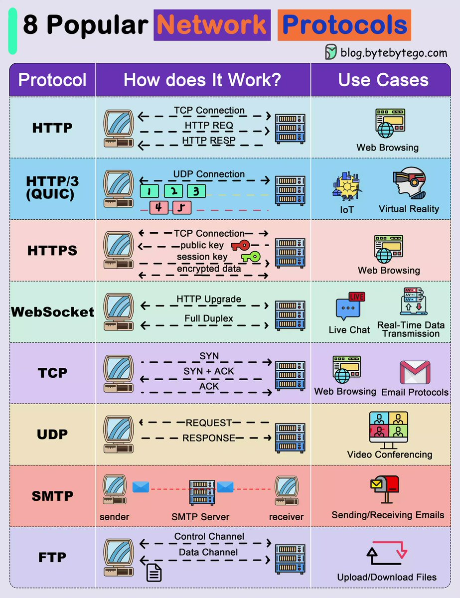

overview of sysNet
description::
× Mcsh-creation: {2020-07-24}
· network is a-system with nodes that communicate an-entity (info, liquid, commodity, ...) among them.
name::
* McsEngl.network!⇒sysNet,
* McsEngl.sysNet!=network,
* McsEngl.McshCor000014.last.html!⇒sysNet,
* McsEngl.dirCor/McshCor000014.last.html!⇒sysNet,
* McsEngl.net!⇒sysNet,
* McsEngl.sysNet!~McsCor000014,
* McsEngl.system.network!⇒sysNet,
* McsEngl.sysNet!=system.network,
01_node of sysNet
description::
· node.
name::
* McsEngl.node-of-sysNet,
* McsEngl.sysNet'01_node,
* McsEngl.sysNet'att002-node,
* McsEngl.sysNet'node,
02_connector of sysNet
description::
· connector is the-entity that connects the-nodes.
name::
* McsEngl.connector-of-sysNet,
* McsEngl.sysNet'02_connector,
* McsEngl.sysNet'att003-connector,
* McsEngl.sysNet'channel,
* McsEngl.sysNet'connector,
* McsEngl.sysNet'link,
03_communicated-entity of sysNet
description::
· communicated entity.
name::
* McsEngl.communicated-entity-of-sysNet,
* McsEngl.sysNet'03_communicated-entity,
* McsEngl.sysNet'att004-communicated-entity,
* McsEngl.sysNet'communicated-entity,
relation-to-graph of sysNet
description::
· a-graph is a-concept without referent that models a-net like entity.
· a-network is a-concept with referent.
===
"In mathematics, computer science and network science, network theory is a part of graph theory. It defines networks as graphs where the nodes or edges possess attributes. Network theory analyses these networks over the symmetric relations or asymmetric relations between their (discrete) components."
[{2023-04-06 retrieved} https://en.wikipedia.org/wiki/Network_theory]
name::
* McsEngl.Mathgrph'relation-to-network,
* McsEngl.graph-relation-to-network,
* McsEngl.sysNet'att001-relation-to-graph,
* McsEngl.sysNet'relation-to-graph,
addressWpg::
* https://bence.ferdinandy.com/2018/05/27/whats-the-difference-between-a-graph-and-a-network/,
info-resource of sysNet
description::
× Mcsh-creation: {2026-05-01}
·
name::
* McsEngl.sysNet'InfRsc,
network-science of sysNet
description::
"Network science is an academic field which studies complex networks such as telecommunication networks, computer networks, biological networks, cognitive and semantic networks, and social networks, considering distinct elements or actors represented by nodes (or vertices) and the connections between the elements or actors as links (or edges). The field draws on theories and methods including graph theory from mathematics, statistical mechanics from physics, data mining and information visualization from computer science, inferential modeling from statistics, and social structure from sociology. The United States National Research Council defines network science as "the study of network representations of physical, biological, and social phenomena leading to predictive models of these phenomena."[1]"
[{2020-07-25} https://en.wikipedia.org/wiki/Network_science]
name::
* McsEngl.network-science,
* McsEngl.sysNet'att005-network-science,
* McsEngl.sysNet'network-science,
network-theory of sysNet
description::
"Network theory is the study of graphs as a representation of either symmetric relations or asymmetric relations between discrete objects. In computer science and network science, network theory is a part of graph theory: a network can be defined as a graph in which nodes and/or edges have attributes (e.g. names).
Network theory has applications in many disciplines including statistical physics, particle physics, computer science, electrical engineering[1][2], biology,[3] economics, finance, operations research, climatology, ecology, public health,[4][5] and sociology. Applications of network theory include logistical networks, the World Wide Web, Internet, gene regulatory networks, metabolic networks, social networks, epistemological networks, etc.; see List of network theory topics for more examples.
Euler's solution of the Seven Bridges of Königsberg problem is considered to be the first true proof in the theory of networks."
[{2020-07-25} https://en.wikipedia.org/wiki/Network_theory]
name::
* McsEngl.network-theory,
* McsEngl.sysNet'att006-network-theory,
* McsEngl.sysNet'network-theory,
structure of sysNet
description::
*
name::
* McsEngl.sysNet'structure,
DOING of sysNet
description::
*
name::
* McsEngl.sysNet'doing,
evoluting of sysNet
description::
× Mcsh-creation: {2020-07-24}
· creation of current concept.
name::
* McsEngl.evoluting-of-sysNet,
* McsEngl.sysNet'evoluting,
WHOLE-PART-TREE of sysNet
description::
× Mcsh-creation: {2026-05-01}
·
name::
* McsEngl.sysNet'whole-part-tree,
* McsEngl.sysNet'part-whole-tree,
whole-tree-of-sysNet::
*
* ... Sympan.
part-tree-of-sysNet::
*
GENERIC-SPECIFIC-TREE of sysNet
description::
× Mcsh-creation: {2026-05-01}
·
name::
* McsEngl.sysNet'generic-specific-tree,
* McsEngl.sysNet'specific-generic-tree,
generic-tree-of-sysNet::
* dynamic-system,
* ... entity.
specific-tree-of-sysNet::
* biological-net,
* broadcast-net,
* computer-net,
* decentralized-crypto-chain--network,
* electrical-net,
* info-net,
* neural-net,
* social-net,
* transport-net,
* water-net,
sysNet.biological
description::
"A biological network is a method of representing systems as complex sets of binary interactions or relations between various biological entities.[1] In general, networks or graphs are used to capture relationships between entities or objects.[1] A typical graphing representation consists of a set of nodes connected by edges."
[{2023-04-06 retrieved} https://en.wikipedia.org/wiki/Biological_network]
name::
* McsEngl.biological-network!⇒netBio,
* McsEngl.sysNet.biological!⇒netBio,
netBio.SPECIFIC
description::
* Between-species interaction network,
* DNA-DNA chromatin network,
* Gene regulatory network,
* Gene co-expression network,
* Metabolic network,
* Neuronal network,
* Protein–protein interaction network,
* Signaling network,
* Within-species interaction network,
name::
* McsEngl.netBio.specific,
sysNet.social
description::
"A social network is a social structure made up of a set of social actors (such as individuals or organizations), sets of dyadic ties, and other social interactions between actors. The social network perspective provides a set of methods for analyzing the structure of whole social entities as well as a variety of theories explaining the patterns observed in these structures.[1] The study of these structures uses social network analysis to identify local and global patterns, locate influential entities, and examine network dynamics.
Social networks and the analysis of them is an inherently interdisciplinary academic field which emerged from social psychology, sociology, statistics, and graph theory. Georg Simmel authored early structural theories in sociology emphasizing the dynamics of triads and "web of group affiliations".[2] Jacob Moreno is credited with developing the first sociograms in the 1930s to study interpersonal relationships. These approaches were mathematically formalized in the 1950s and theories and methods of social networks became pervasive in the social and behavioral sciences by the 1980s.[1][3] Social network analysis is now one of the major paradigms in contemporary sociology, and is also employed in a number of other social and formal sciences. Together with other complex networks, it forms part of the nascent field of network science.[4][5]"
[{2023-04-06 retrieved} https://en.wikipedia.org/wiki/Social_network]
name::
* McsEngl.netSocial,
* McsEngl.sysNet.social!⇒netSocial,
* McsEngl.social-net!⇒netSocial,
netSocial.twitter
description::
· "Twitter, currently rebranding to X,[b][c][16] is an online social media and social networking service operated by the American company X Corp., the successor of Twitter, Inc.
On Twitter, users can post texts, images and videos known as "tweets".[17][18] Registered users can post, like, repost, comment and quote posts, and direct message other registered users. Users interact with Twitter through browser or mobile frontend software, or programmatically via its application programming interfaces (APIs).
Twitter was created by Jack Dorsey, Noah Glass, Biz Stone, and Evan Williams in March 2006 and launched in July of that year. Its former parent company, Twitter, Inc., was based in San Francisco, California and had more than 25 offices around the world.[19] By 2012, more than 100 million users produced 340 million tweets a day,[20] and the service handled an average of 1.6 billion search queries per day.[21][22][20] In 2013, it was one of the ten most-visited websites and has been described as "the SMS of the Internet".[23] By the start of 2019, Twitter had more than 330 million monthly active users.[24] In practice, the vast majority of tweets are produced by a minority of users.[25][26] In 2020, it was estimated that approximately 48 million accounts (15% of all accounts) were fake.[27]
On October 27, 2022, business magnate Elon Musk acquired Twitter for US$44 billion, gaining control of the platform.[28][29][30][31] Since the acquisition, the platform has been criticized for facilitating an increase in content containing hate speech.[32][33] Linda Yaccarino succeeded Musk as CEO on June 5, 2023.[11][34] In July 2023, Musk announced that Twitter would be rebranded to X and that the Twitter bird logo would be phased out.[35][36]"
[{2023-08-20 retrieved} https://en.wikipedia.org/wiki/Twitter]
name::
* McsEngl.Webapp.twitter,
* McsEngl.nexSocial.twitter,
sysNet.space
description::
"Many real networks are embedded in space. Examples include, transportation and other infrastructure networks, brain networks."
[{2023-04-06 retrieved} https://en.wikipedia.org/wiki/Complex_network]
name::
* McsEngl.netSpace,
* McsEngl.spacial-net!⇒netSpace,
* McsEngl.sysNet.space!⇒netSpace,
sysNet.computer
description::
"computer network definition
A computer network is a set of two or more computers that are interconnected and can share resources. These resources can include files, printers, scanners, and internet access. Computer networks can be connected using a variety of physical media, such as copper wires, fiber optic cables, and wireless radio waves.
Computer networks are used in a wide variety of settings, including businesses, schools, homes, and government agencies. They allow people to share information and collaborate on projects more easily. Computer networks also make it possible for people to access resources that are located in remote locations.
There are two main types of computer networks: local area networks (LANs) and wide area networks (WANs). LANs are typically small networks that are confined to a single building or campus. WANs are larger networks that can span multiple cities, countries, or even the entire world.
The Internet is the largest WAN in the world. It is a global system of interconnected computer networks that allows people to access information and resources from anywhere in the world.
Here are some of the benefits of using computer networks:
* Resource sharing: Computer networks allow users to share resources, such as files, printers, and scanners, with other users on the network. This can save time and money.
* Communication: Computer networks make it easy for users to communicate with each other. This can be done through email, instant messaging, or video conferencing.
* Collaboration: Computer networks allow users to collaborate on projects more easily. For example, users can share files and work on documents together in real time.
* Access to information: Computer networks give users access to a vast amount of information. This includes information from the internet, databases, and other online resources.
Computer networks are an essential part of modern life. They allow us to stay connected, share information, and collaborate with others more easily."
[{2023-10-03 retrieved} https://bard.google.com/chat/3f5865aa44e29301]
name::
* McsEngl.netCmpr,
* McsEngl.netCmpr!=computer-network,
* McsEngl.computer-network!⇒netCmpr,
* McsEngl.sysNet.computer!⇒netCmpr,
protocol of netCmpr
description::
"Alex Xu @alexxubyte
Explaining 8 Popular Network Protocols in 1 Diagram. The method to download the high-resolution PDF is available at the end.
Network protocols are standard methods of transferring data between two computers in a network.
1. HTTP (HyperText Transfer Protocol)
HTTP is a protocol for fetching resources such as HTML documents. It is the foundation of any data exchange on the Web and it is a client-server protocol.
2. HTTP/3
HTTP/3 is the next major revision of the HTTP. It runs on QUIC, a new transport protocol designed for mobile-heavy internet usage. It relies on UDP instead of TCP, which enables faster web page responsiveness. VR applications demand more bandwidth to render intricate details of a virtual scene and will likely benefit from migrating to HTTP/3 powered by QUIC.
3. HTTPS (HyperText Transfer Protocol Secure)
HTTPS extends HTTP and uses encryption for secure communications.
4. WebSocket
WebSocket is a protocol that provides full-duplex communications over TCP. Clients establish WebSockets to receive real-time updates from the back-end services. Unlike REST, which always “pulls” data, WebSocket enables data to be “pushed”. Applications, like online gaming, stock trading, and messaging apps leverage WebSocket for real-time communication.
5. TCP (Transmission Control Protocol)
TCP is is designed to send packets across the internet and ensure the successful delivery of data and messages over networks. Many application-layer protocols build on top of TCP.
6. UDP (User Datagram Protocol)
UDP sends packets directly to a target computer, without establishing a connection first. UDP is commonly used in time-sensitive communications where occasionally dropping packets is better than waiting. Voice and video traffic are often sent using this protocol.
7. SMTP (Simple Mail Transfer Protocol)
SMTP is a standard protocol to transfer electronic mail from one user to another.
8. FTP (File Transfer Protocol)
FTP is used to transfer computer files between client and server. It has separate connections for the control channel and data channel."

[{2023-10-03 retrieved} https://twitter.com/alexxubyte/status/1708863540067696878]
name::
* McsEngl.network-protocol,
* McsEngl.netCmpr'protocol,